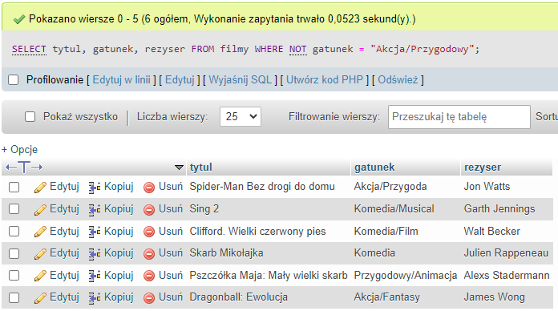
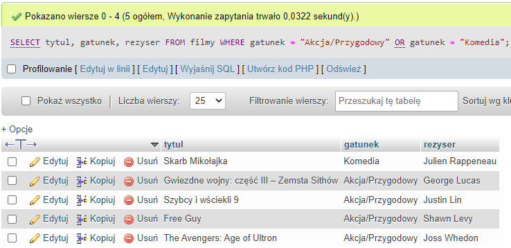

WHERE
Klauzula WHERE służy do filtrowania rekordów / stawiania warunków.
Składnia:
SELECT kolumna1, kolumna2
FROM tabela
WHERE warunek;Możemy tworzyć przeczenia dzięki operatorowi NOT
Zapytanie zwróciło nam tablice z danych NIE spełniającymi warunek.
Można łączyć warunki za pomocą operatorów AND i OR
AND - i
OR - lub
Teraz zapytanie zwróciło nam tablice z danych spełniające oba warunki, dzięki operatorowi "AND".

To zapytanie zwróciło nam tablice z danych spełniające jeden z warunków, dzięki operatorowi "OR".